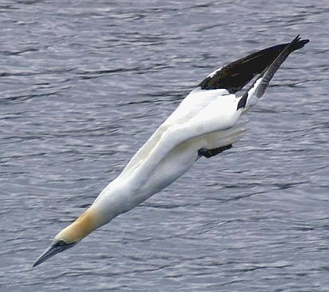

Thursday, January the 22nd, 2015
back to: title, date or indexes
According to a six-DVD set on the subject of British Birds made by the ornithologist Paul Doherty, the gannet is “the most pointy bird to be found in Britain”.
I am indebted to Andy Martin for bringing this critically important information to my attention. Mr Martin adds: “I wish to pass a motion that the gannet be adopted as the official emblem of Pointy Town, to appear on any heraldic designs, flags, and stationery”. I think we can consider that carried, nem. con.

The gannet : exceedingly pointy